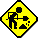

Put a FIXME; near things that need to be fixed up. A FIXME; causes the under construction symbol to appear, like this 
A NEEDHELP; indicates, that you need someone's help in order to document something, you don't know for sure. This is mostly the case if you need inside information from a developer. The symbol looks like this:
Don't get confused because FIXME; looks the same as NEEDHELP; - this is just for the moment. When you like to use one of them, think of what it should mean, instead of how it looks like: Take FIXME; if you have great ideas of what to document, but have no time or no knowledge about it, or just noticed something wrong or outdated. NEEDHELP; instead should be used to request help on something (see above).
This is just a first try to clearify the difference between NEEDHELP; and FIXME;.
To maintain a consistent spelling, some "problem words" are mentioned here, along with a hint on how to spell them.